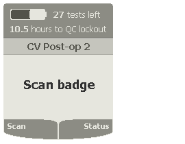
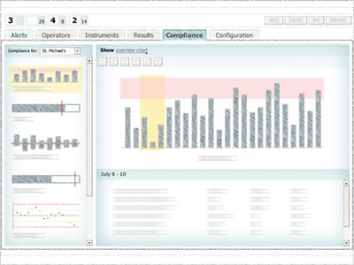

A laboratory instruments company asked Cooper to design the next generation of their handheld blood glucose meter. I led a team that researched the meter’s use in hospitals and then proposed designs for its hardware, software and data management system. The client used these proposals to plan the new meter’s development.
To understand how nurses use the current meter, my teammate and I started the project with site visits to 8 hospitals. We observed nurses measuring patients’ blood glucose levels: the nurse would insert a test strip into the meter, prick the patient’s finger, and place a drop of their blood on the end of the strip. 20 seconds later the meter would display the result.
On our site visits, we witnessed nurses having difficulty with various aspects of the current meter, such as its keypad, its built-in barcode scanner, its carrying case, and its hard-to-open test strips. We worked with a Cooper industrial designer to address not just the meter’s form but the entire glucose testing process.
To the right is our proposed design for the new glucose meter. We added a larger screen and replaced the keypad-driven menu with two soft-buttons and a scroll wheel, similar to a cellphone interface. Below the sketch is an animation of a user interacting with the device. With the soft-button interface, a nurse can rest her thumb comfortably on the left button and press it to move through the majority of the screens.
When the test is finished, the meter wirelessly uploads the result to a data management system. During our research we also visited the lab personnel who are responsible for using this system to track the accuracy of the results. On the bottom right is a sketch of one of the tools we designed to help the lab demonstrate compliance with state and federal regulations during their yearly inspection.
(by a Cooper colleague; I can't sketch that well, unfortunately!)

